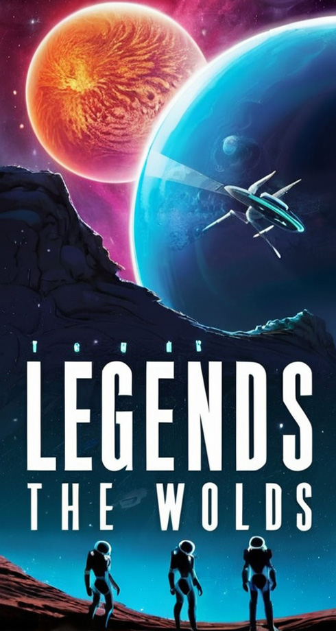
Галактику населяють чотири раси – люмініти, соларіанці, террамани і акваїти.
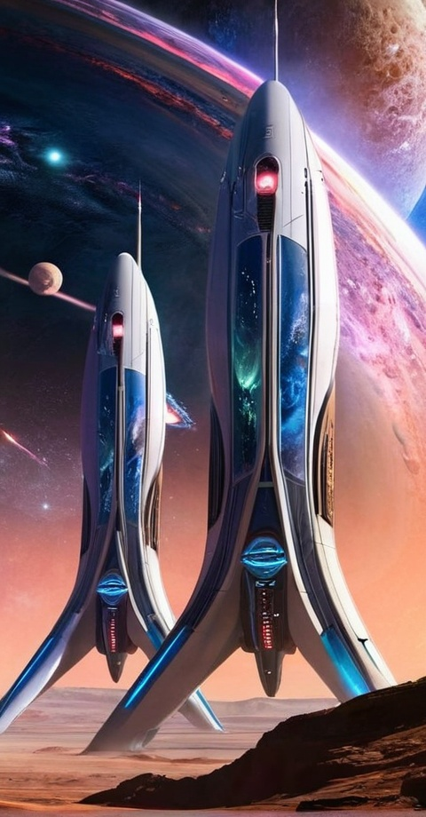
Люмініти черпають силу зі світла.
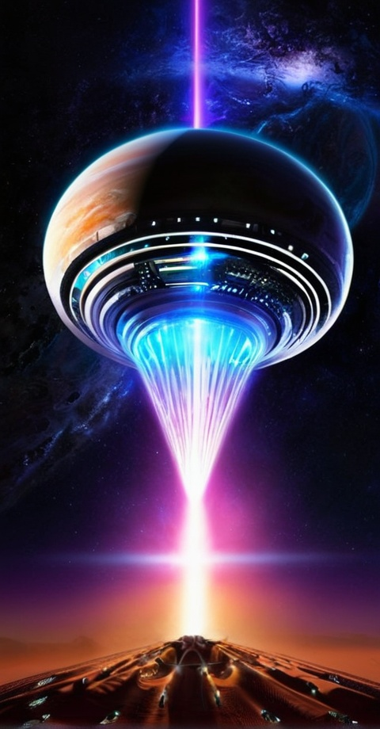
Cоларіанці живуть у гармонії із сонцем.
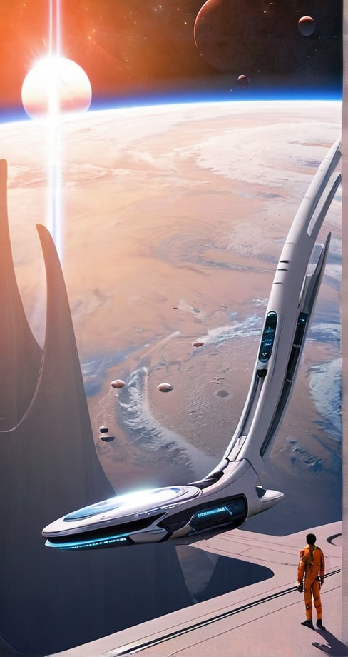
Террамани тісно пов'язані з землею.
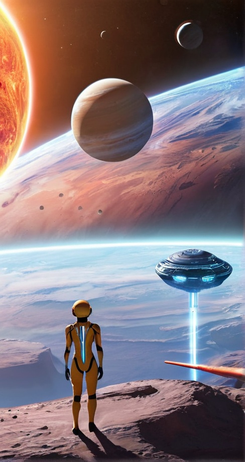
Акваїти поклоняються воді.
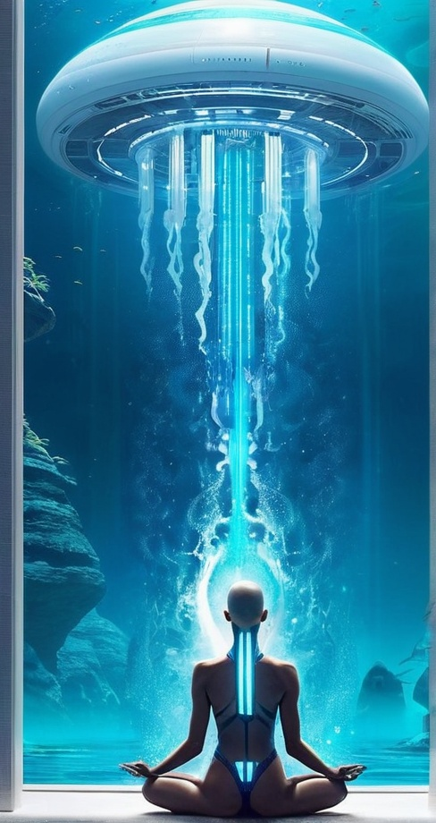
У центрі нашої історії – боротьба за виживання і владу, яка розгортається на чотирьох планетах:
Луміна, Соларіс, Терра і Аква.
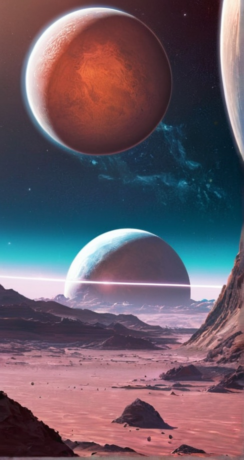
Хто з них переможе – отримає ключ до нового світу, Атлантіс, де кожна раса зможе жити вільно і безконфліктно.
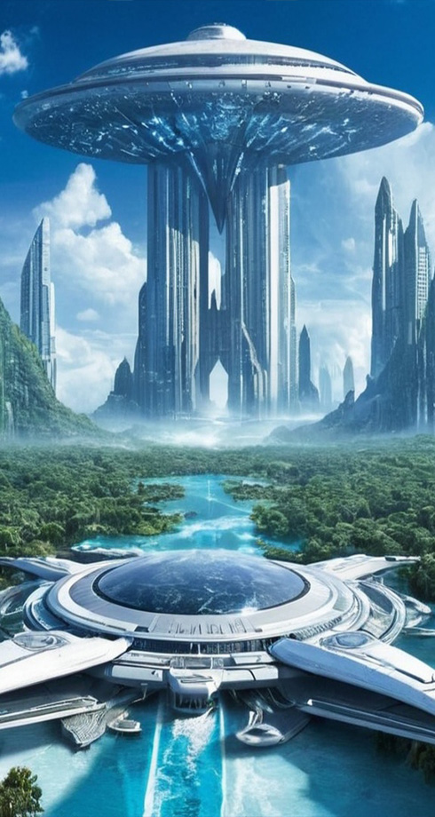
Перемога, як це часто буває, залежить від кількох обраних, котрі, на перший погляд, всього лише підлітки, але у кожного з них є своя таємниця, своє призначення і свій шлях.
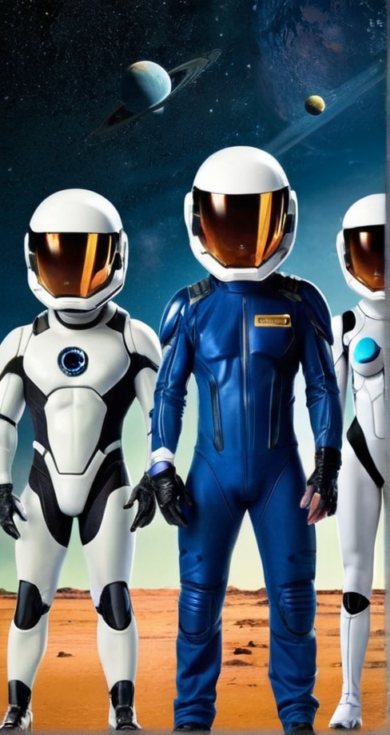
Життя підлітка Алекса з планети Луміна йшло своїм плином: навчання, тренування у спортзалі і звичайне хобі — польоти на гравіборді…
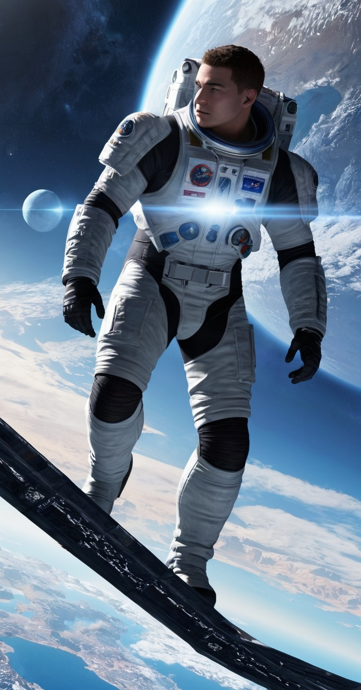
Знайомство з Лірією, дівчиною з очима, що світяться, відкрило перед хлопцем не лише власні приховані здібності, а й таємниці чотирьох світів.
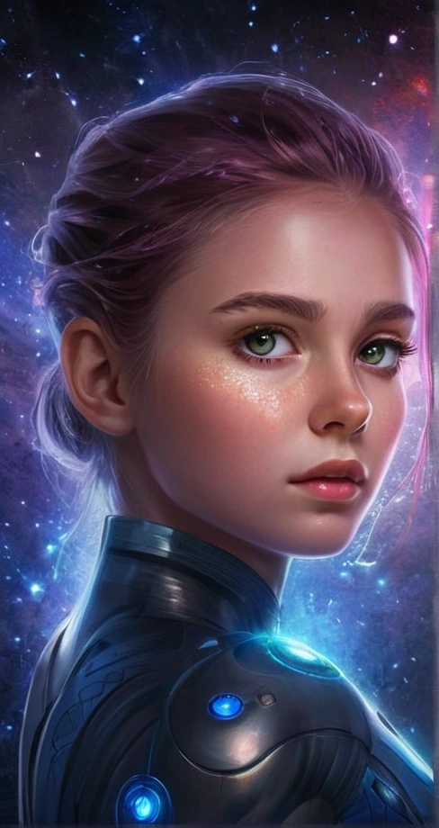
Алекс не міг позбутися відчуття, що знайомство з Лірією змінить його життя назавжди.
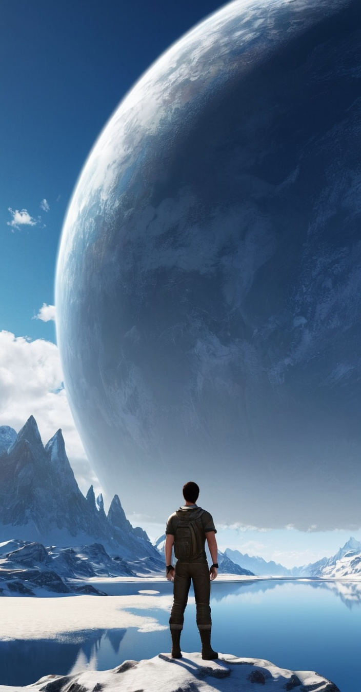
Після їхньої першої зустрічі на забутій платформі гравібордів, він почав бачити дивні сни, де планети
Луміна,
Соларіс,
Терра і
Аква зливалися в один світ – Атлантіс.
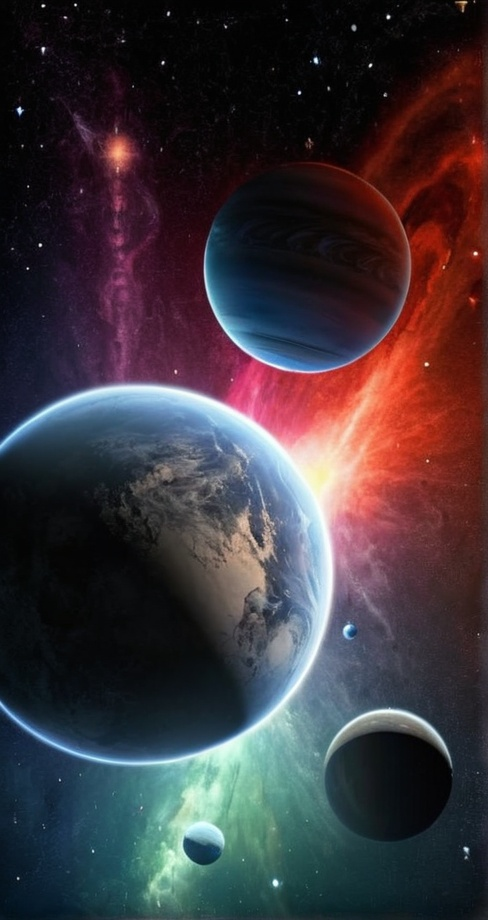